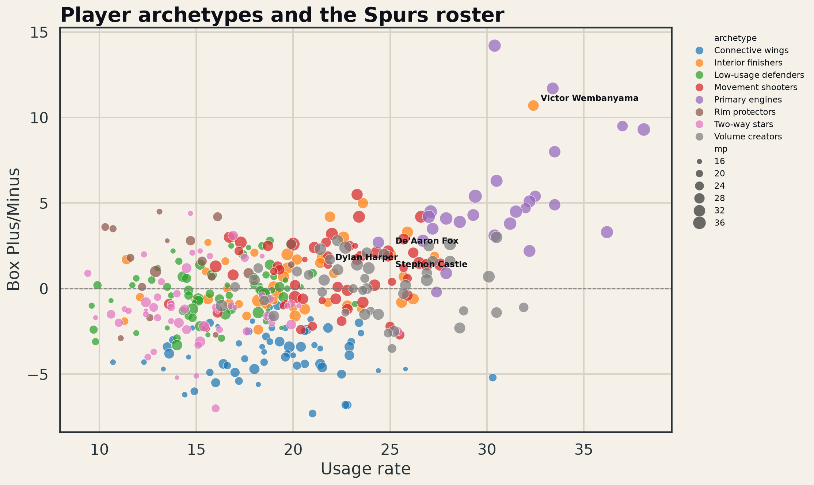

Which statistical roles exist among real rotation players, where do the Spurs fall, and which league neighbors provide plausible complementary-player comparisons?
An eight-cluster model places every qualifying rotation player into a role using scoring, playmaking, rebounding, shooting volume/efficiency, usage, defensive events, and box impact. San Antonio’s leading qualifying profiles are Victor Wembanyama (Interior finishers), Luke Kornet (Rim protectors), De’Aaron Fox (Movement shooters), Stephon Castle (Movement shooters), Julian Champagnie (Low-usage defenders).
The useful output is not the label itself; it is the leaguewide neighborhood around each Spur. That makes role overlap, succession planning, and complementary-player searches reproducible without pretending that positions capture how players actually produce value.

Replace box-only defensive features with matchup and tracking data; test cluster stability across seasons and alternative algorithms before using the taxonomy in acquisition decisions.